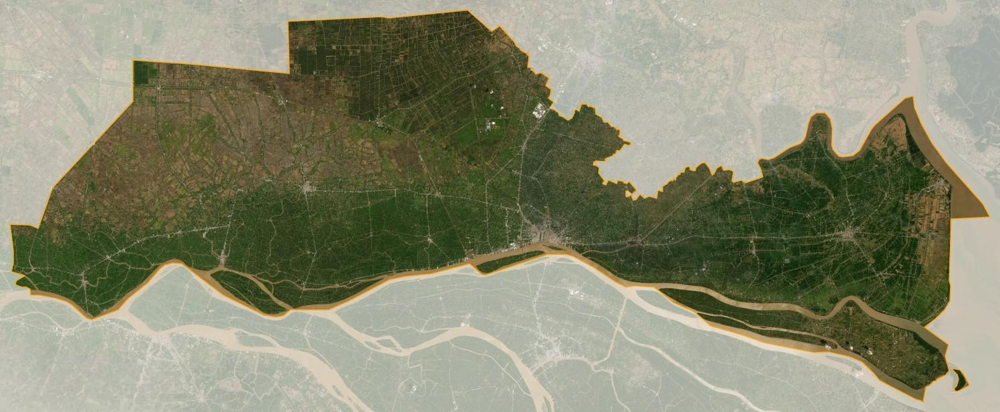
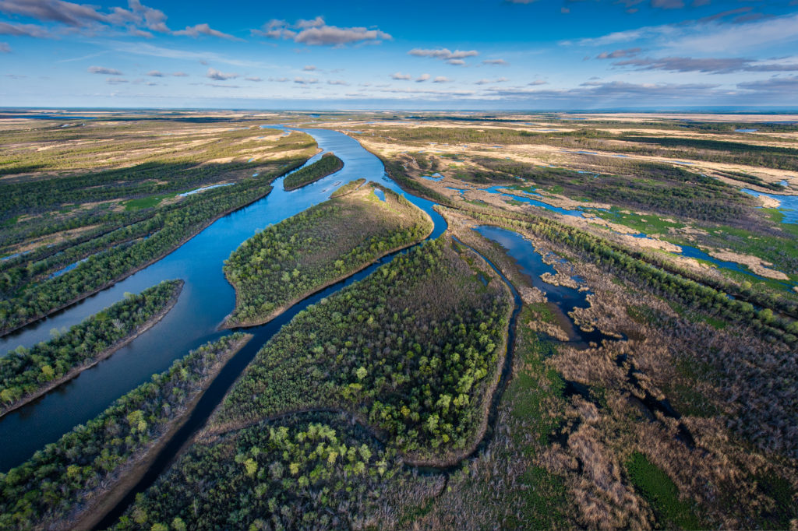
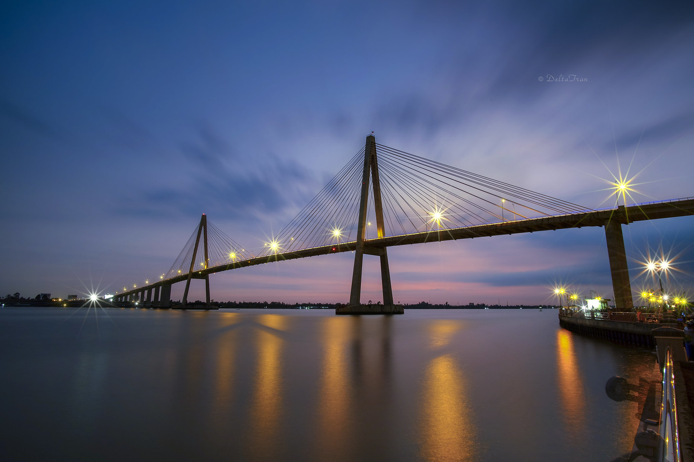
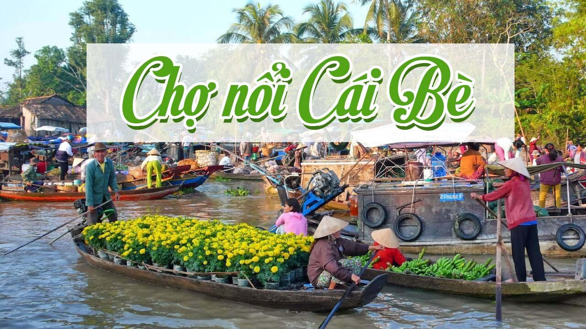
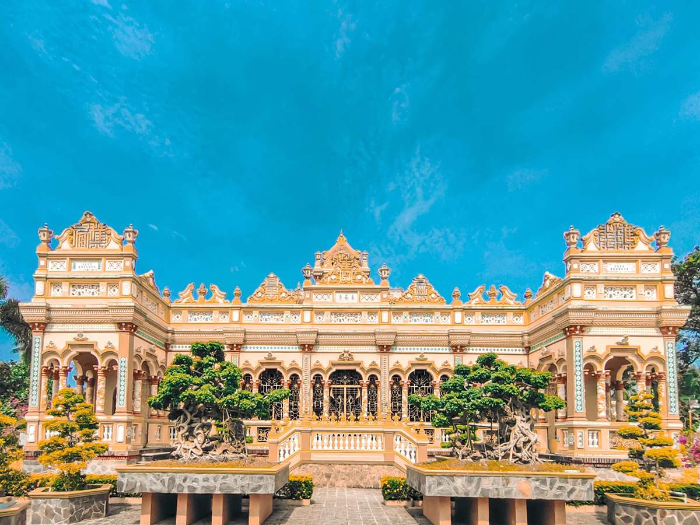
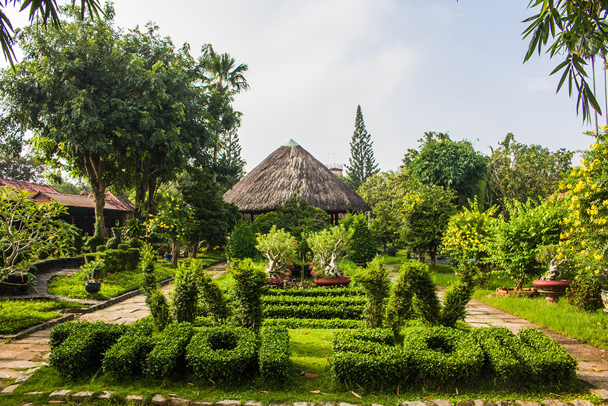

THÔNG TIN
1.ĐỊA LÍ TỈNH TIỀN GIANG
Tiền Giang có lợi thế nằm giữa 2 vùng kinh tế quan trọng – vùng kinh tế trọng điểm phía nam và vùng đồng bằng sông Cửu Long.
Đường
bờ biển dài 32km với hàng nghìn bãi cạn ven biển, là lợi thế cho việc
nuôi trồng thủy sản và phát triển kinh tế biển.

Thành phố Mỹ Tho giữ vai trò là trung tâm kinh tế, chính trị xã hội hàng đầu của tỉnh Tiền Giang.
Là đầu mối giao thông lớn về giáo dục, văn hóa và du lịch của các tỉnh lân cận.
Tỉnh Tiền Giang có diện tích khoảng 2508,4 km.
*VỊ
TRÍ
Tiền Giang có địa hình phẳng và thuộc vùng đồng bằng, với nền đất phù sa màu mỡ.
Tỉnh được chia thành nhiều huyện và thành phố và được chia thành 2 vùng: ven biên và vùng miền tây.

*Hệ thống
sông ngòi: Tỉnh có mạng lưới sông ngòi phong phú, với sông Tiền là trục chính
2.KHÍ
HẬU
Tiền Giang thuộc vùng khí hậu nhiệt đới gió mùa, với hai mùa khô (tháng 12-4) và mùa mưa (tháng 5-11).
3.KINH
TẾ
VÀ DU LỊCH
-Tiền
Giang là một trong những tỉnh phát triển nông nghiệp và công nghiệp ở
miền Nam Việt Nam. Đặc sản nổi tiếng của tỉnh gồm có trái cây như mít,
xoài, sầu riêng và các loại cây ăn quả khác.
-Ngoài
ra, Tiền Giang còn có nhiều điểm du lịch và di tích lịch sử hấp dẫn như
khu du lịch sinh thái chợ nổi Cái Bè cầu Rạch Miễu và chùa Vĩnh
Tràng.
.....................................................................................................................................................................................................................................
....................................................................................................................................................................................................................................
Cầu Rạch Miễu:-Cầu Rạch Miễu nằm trên quốc lộ 60 bắc qua sông Tiền, là cầu dây văng nối liền 2 tỉnh Tiền Giang và Bến Tre
-Cầu rạch Miễu là cầu dây văng lớn thứ 3 được xây dựng ở đồng bằng sông Cửu Long
-Là cây cầu đầu tiên do các kĩ sư Việt Nam thiết kế và thi công theo kĩ thuật mới
HÌNH ẢNH CẦU RẠCH MIỄUChợ nổi Cái Bè:-Thuộc thị trấn Cái Bè, huyện Cái Bè, tỉnh Tiền Giang
-Là chợ nổi ở miền Tây Nam Bộ mang sắc thái rất riêng của vùng đồng bằng sông Cửu Long kết hợp với văn hóa sông nước, miệt vườn

HÌNH ẢNH CHỢ NỔI CÁI BÈ
Chùa Vĩnh Tràng:-Tọa lạc ở xã Mỹ Phong, thành phố Mỹ Tho, tỉnh Tiền Giang
-Được xây dựng vào đầu thế kỉ XIX và từ năm 1849 đến nay chùa được biết đến với cái tên "Vĩnh Tràng"
-Năm 1984, chùa Vĩnh Tràng đã được Bộ văn hóa Thể thao và du lịch xếp hạng Di tích cấp Quốc gia
HÌNH ẢNH CHÙA VĨNH TRÀNG
Cồn Thới Sơn:
-Đây là cồn lớn nhất trong số 4 cồn ở sông Mỹ Tho với nhiều mương rạch chằng chịt
-Ngoài
hệ thống nương rạch đa dạng thì cồn Thới Sơn còn sở hữu những mảnh đất
màu mỡ với nhiều loại cây xanh, trái cây đa dạng

HÌNH ẢNH CỒN THỚI SƠN